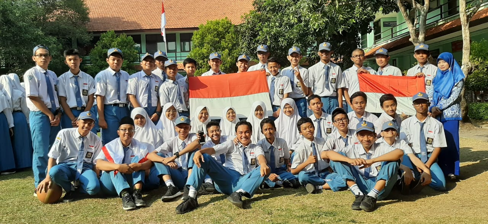

TENTANG SEKOLAH..
Bicara Sekolah
Menurut saya,masa sekolah saya Sejak TK samapai SMP terlalu monokrom a.k.a Flat tanpa warna.
Karena saat itu yang dipikiran saya hanya belajar dan hidup di dunia saya sendiri
Bisa dibilang saya orang yang anti-sosial saat itu,saya lebih suka sendiri dan bekerja sendiri
Hal itu terjadi juga karena kebanyakan teman TK hingga SMP saya tidak se frekuensi dengan saya
Sementara saat ini hidup saya sudah muali sedikit berwarna karena
saya mendapat banyak teman yang se frekuensi
dengan saya,Teman-teman SMK saya.Saya merasa baru pertama kali menemukan teman yang sekiranya se frekuensi dan nyambung
dengan saya.
Masa SMK saya di SMKN 2 Buduran merupakan masa sekolah
yang paling menyenangkan bagi saya.
Bersekolah di SMKN 2 Buduran merupakan impian saya dan ketika itu adalah langkah pertama
saya menuju cita-cita saya.
Mendapat Teman-Teman Yang Berharga
Saya mendapatkan teman-teman yang berharga ketika berada di SMENDA,mereka orang orang baik dan menyenangkan serta Pandai dan dapat diandalkan
